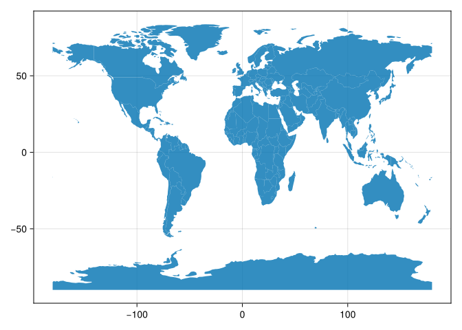
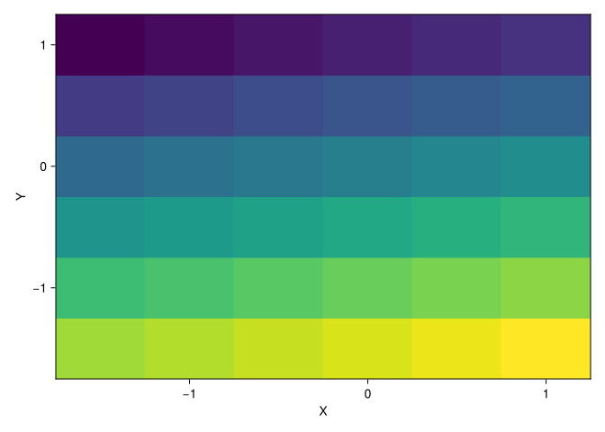

usingCairoMakieusingGeoMakief, a, p =poly(df.geom)

1.1.1 Raster from scratch
In this section, we are going to demonstrate the creation of rasters from scratch. We will construct two small rasters, elev and grain, which we will use in examples later in the book. Unlike creating a vector layer (see ?sec-vector-layer-from-scratch), creating a raster from scratch is rarely needed in practice because aligning a raster with the proper spatial extent is challenging to do programmatically (“georeferencing” tools in GIS software are a better fit for the job). Nevertheless, the examples will be helpful to become more familiar with the Rasters.jl data structures.
usingRastersimportGeoFormatTypes as GFT
WARNING: Method definition convert_arguments(MakieCore.CellGrid, Rasters.AbstractRaster{var"#s115", 2, D, A} where A where D where var"#s115") in module RastersMakieExt at /home/runner/.julia/packages/Rasters/JcYNY/ext/RastersMakieExt/plotrecipes.jl:304 overwritten at /home/runner/.julia/packages/Rasters/JcYNY/ext/RastersMakieExt/plotrecipes.jl:308.
ERROR: Method overwriting is not permitted during Module precompilation. Use `__precompile__(false)` to opt-out of precompilation.
Conceptually, a raster is an array combined with georeferencing information, whereas the latter comprises:
Lookup vectors for the axes, encoding the spatial coordinates for each grid cell. These take the form of the X and Y dimensions in the raster that you’ll see below.
A coordinate reference system (CRS) definition, specifying the association of the raster’s coordinates with the surface of the earth.
Therefore, to create a raster, we first need to have an array with the values, and then supplement it with the georeferencing information. Let’s create the arrays elev and grain. The elev array is a \(6 \times 6\) array with sequential values from 1 to 36. It can be created as follows using base Julia functions.
The grain array represents a categorical raster with values 0, 1, 2, corresponding to categories “clay”, “silt”, “sand”, respectively. We will create it from a specific arrangement of pixel values, using reshape.
Note that in both cases, we are using the uint8 (unsigned integer in 8 bits, i.e., 0-255) data type, which is sufficient to represent all possible values of the given rasters (see ?tbl-numpy-data-types). This is the recommended approach for a minimal memory footprint.
What is missing now is the georeferencing information (see ?sec-using-rasters-jl). In this case, since the rasters are arbitrary, we also set up arbitrary dimension lookups for the x and y axes, where:
The origin (\(x_{min}\), \(y_{max}\)) is at -1.5,1.5
The raster resolution (\(delta_{x}\), \(delta_{y}\)) is 0.5,-0.5
We can add this information using rasterio.transform.from_origin, and specifying west, north, xsize, and ysize parameters. The resulting transformation matrix object is hereby named new_transform.
We can now construct a Raster object, from the elev array and the dimensions new_x and new_y.
We assign to it a CRS of EPSG:4326 (which encodes that the coordinate system is longitude/latitude on the “standard” WGS84 definition of the Earth’s curvature).
Here, we use the GFT.EPSG(code) constructor to create an object that encodes a reference code under the European Petroleum Survey Group (EPSG) authority’s database of coordinate reference systems.
The raster can now be plotted in its coordinate system, passing the array elev along with the transformation matrix new_transform to rasterio.plot.show (Figure 1.1).
plot(elev_raster)

Figure 1.1: Plot of the elev raster, a minimal example of a continuous raster, created from scratch
The grain raster can be plotted the same way, as we are going to use the same transformation matrix for it as well (Figure 1.2).
Figure 1.2: Plot of the grain raster, a minimal example of a categorical raster, created from scratch
At this point, we have two rasters, each composed of an array and related dimension lookups. We can work with the raster using Rasters.jl by:
Keeping in mind that any other layer we use in the analysis is in the same CRS
Finally, to export the raster for permanent storage, along with the spatial metadata, we need to go through the following steps:
Create a raster file (where we set the lookups and the CRS, among other settings)
Write the array with raster values into the connection
Close the connection
Don’t worry if the code below is unclear; the concepts related to writing raster data to file will be explained in ?sec-data-output-raster. For now, for completeness, and also to use these rasters in subsequent chapters without having to re-create them from scratch, we just provide the code for exporting the elev and grain rasters into the output directory. In the case of elev, we do it as follows with the Rasters.write functions and methods of the Rasters.jl package.
write("output/elev.tif", elev_raster; force =true)
"output/elev.tif"
Note that the CRS we (arbitrarily) set for the elev raster is WGS84, defined using crs=4326 according to the EPSG code.
Exporting the grain raster is done in the same way, with the only differences being the file name and the array we write into the connection.
write("output/grain.tif", Raster(grain, (new_x, new_y); crs = GFT.EPSG(4326)); force =true)
"output/grain.tif"
As a result, the files elev.tif and grain.tif are written into the output directory. We are going to use these small raster files later on in the examples (for example, ?sec-raster-subsetting).
Note that the transform matrices and dimensions of elev and grain are identical. This means that the rasters are overlapping, and can be combined into one two-band raster, processed in raster algebra operations (?sec-map-algebra), etc.